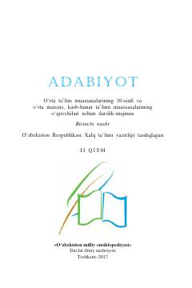

A210-sinf o'quvchilari uchun mo'ljallangan adabiyot fanidan darslik-majmua.
Ushbu darslik-majmua 10-sinf o'quvchilari uchun mo'ljallangan bo'lib, o'zbek adabiyoti tarixini, xususan, jadidchilik davri va Mahmudxo'ja Behbudiy ijodini qamrab oladi. Kitobda adabiy asarlar tahlili, ma'rifiy mavzular va o'quv dasturiga oid muhim ma'lumotlar keltirilgan.